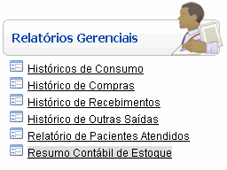
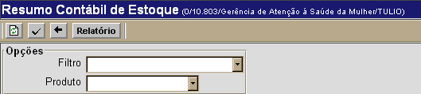
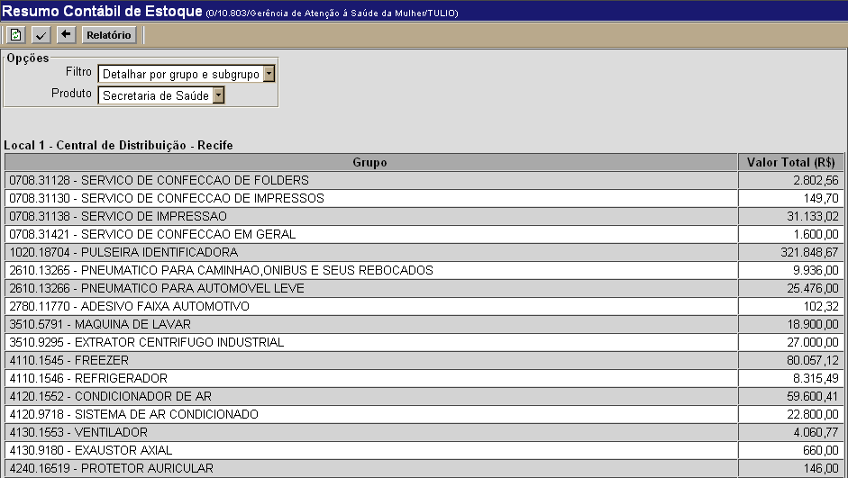

Resumo Contábil de Estoque [ Voltar ]
Utilize esta tela para visualizar o relatório contábil de estoque da rede. O
relatório pode ser
específico para produtos da Secretaria de Saúde ou pactuados (Ministério da Saúde).
O formulário"Resumo Contábil de Estoque"
encontra-se dentro do menu "Relatórios
Gerenciais".

Ao clicar no formulário, a seguinte tela
será exibida:

Para gerar o
relatório, siga os passos abaixo:
1º Passo:
configure o filtro e tipo de produto para a pesquisa.
- Filtro.
Informe se os resultados devem ser detalhados por grupo ou por grupo e subgrupo.
- Produto. Informe os produtos que deseja incluir na pesquisa: Todos, Secretaria de Saúde ou Pactuados/MS.
2º
Passo: clique no botão para processar resumo. Os resultados da pesquisa serão exibidos na parte inferior da tela. para processar resumo. Os resultados da pesquisa serão exibidos na parte inferior da tela.  3° Passo: clique no botão  para visualizar e imprimir o relatório. para visualizar e imprimir o relatório.
Para imprimir o relatório, clique no botão  [Imprimir]
do navegador. Para voltar à tela anterior, clique em [Imprimir]
do navegador. Para voltar à tela anterior, clique em  [Voltar]. [Voltar].
Ir
para o topo da página
|